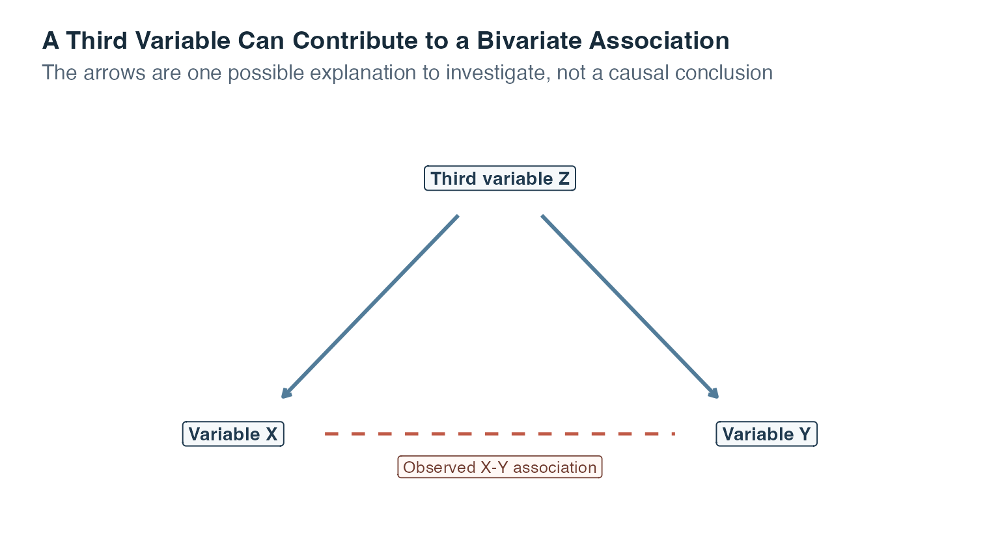
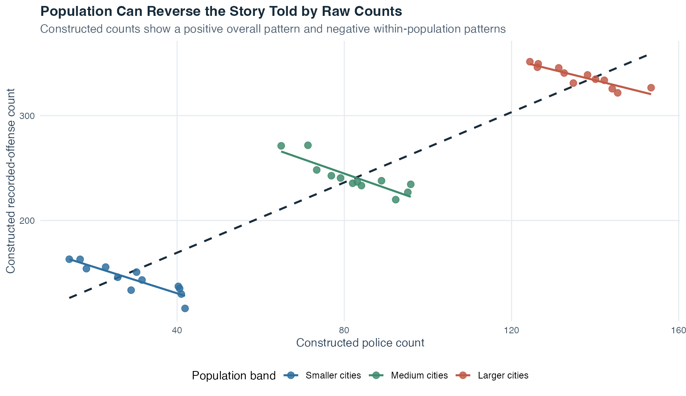
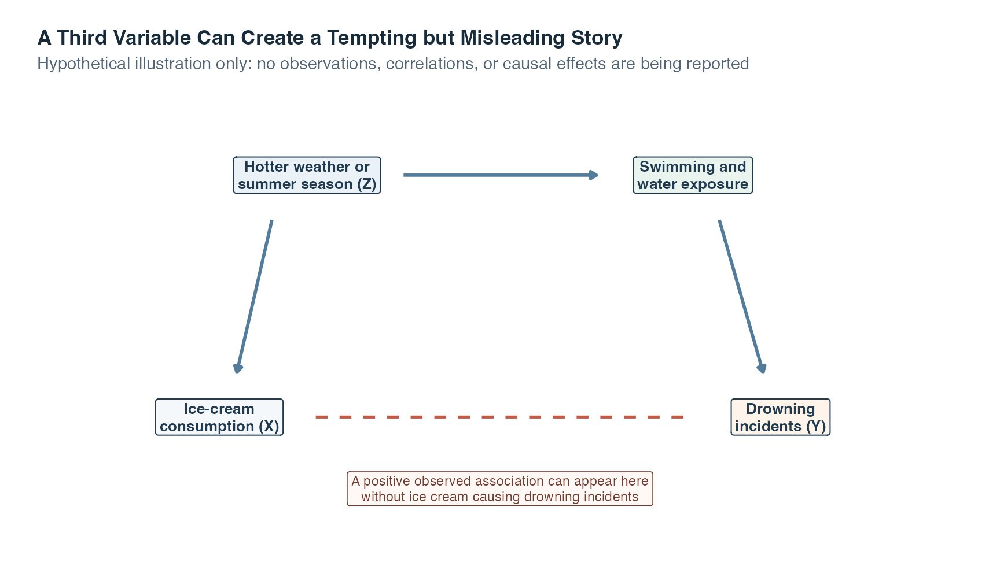
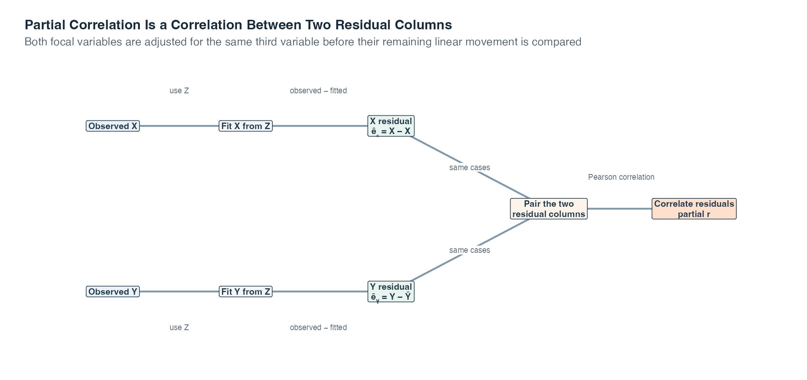
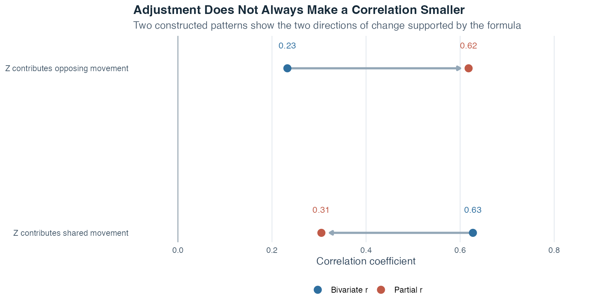

Exercise Sheet
Choose PDF for printing or Word for editing.
Introduction to Statistics · Topic 6
Topic 4 introduced the bivariate correlation, a correlation calculated for two variables. Topic 5 introduced a residual, the difference between an observed value and the value fitted by a regression line. Partial correlation connects those ideas.
Imagine that weekly practice time and a reasoning score rise together. Now suppose learners with stronger prior preparation also tend to practice more and to earn higher scores. The original two-variable correlation is still real as a description of the observed pairs, but it combines several paths. A useful next question is whether practice and reasoning still move together after their linear connections with prior preparation are represented.
Suppose variables \(X\) and \(Y\) are correlated. A third variable \(Z\) may also be related to both of them. The bivariate correlation \(r_{XY}\) combines all linear movement visible between \(X\) and \(Y\), including movement that they share with \(Z\). A partial correlation asks a narrower question:
Guiding question: How strongly are \(X\) and \(Y\) linearly associated after the linear part connected with \(Z\) has been taken into account?
The phrase taken into account is important. Statistical adjustment does not physically hold \(Z\) constant, erase a cause, or recreate an experiment. It uses a model to separate the linear part of each measured variable associated with \(Z\) from the part not fitted by \(Z\).
It helps to see this topic as three familiar questions placed in sequence:
| Question | Tool already introduced | What the tool shows |
|---|---|---|
| Do \(X\) and \(Y\) move together in a straight-line pattern? | Pearson correlation from Topic 4 | The unadjusted, two-variable association |
| What value of \(X\) or \(Y\) would a line fitted from \(Z\) predict? | Simple regression from Topic 5 | The part of each focal variable represented by \(Z\) |
| Do the two observed-minus-fitted parts still move together? | Partial correlation in this topic | The linear association remaining after both variables are adjusted for \(Z\) |
The rows are not three competing analyses. They form one chain. We first describe the original association, then use two regression lines to make the adjustment visible, and finally correlate what remains. Keeping that chain in view makes the formulas later in the page much less mysterious.
Report both the original bivariate correlation and the partial correlation. Their difference is part of the result because it shows how the numerical association changes when the measured third variable enters the analysis.
By the end of this topic, you should be able to:
A third variable is another measured characteristic that may help explain the observed association between \(X\) and \(Y\). For example, imagine that \(X\) and \(Y\) both tend to increase as \(Z\) increases. If we ignore \(Z\), their shared movement can contribute to a positive \(X\)-\(Y\) correlation.
A spurious association is an apparent association whose interpretation changes because a third variable contributes to the pattern. The word spurious does not mean that the calculated correlation is numerically wrong. It means that treating the bivariate coefficient as a complete explanation would be misleading.

This diagram shows only one possible explanation. The direction may instead run from \(X\) to \(Y\), from \(Y\) to \(X\), in both directions, or through additional variables. A correlation coefficient cannot choose among these possibilities.
Read the picture from the top downward. The two solid arrows say that \(Z\) may contribute to both \(X\) and \(Y\). If higher values of \(Z\) tend to accompany higher values of both focal variables, \(X\) and \(Y\) can appear to move together even before any separate \(X\)-\(Y\) relationship is considered. The dashed connection marks the association we observe and want to understand. It is dashed because the diagram does not tell us what process produced it. The figure is therefore a map of a question, not proof of a causal path.
Counts recorded across cities provide a concrete example. Larger cities tend to have more residents, more police officers, and more recorded offenses. A positive correlation between the police count and the offense count can therefore arise largely because both counts increase with population size. Such a correlation gives no evidence that having more police produces more crime. Comparing cities within similar population bands asks a narrower question, although that comparison also remains associational.
The next figure uses newly constructed counts, not records from real cities. The dashed dark line summarizes the raw association across all constructed cities. The colored lines compare cities only within the same broad population band.

The reversal between the overall and within-band lines is deliberately visible. It demonstrates why the raw coefficient is not a complete explanation. It does not demonstrate that increasing police numbers would reduce offenses, because this constructed comparison is not a randomized experiment and many other city characteristics could matter.
A second familiar illustration reaches the same lesson without using any numbers. Suppose ice-cream consumption and drowning incidents appear to rise during the same part of the year. It would be tempting to tell a direct story from one variable to the other. A more plausible third-variable question asks what happens when weather and season change. Hotter weather can increase ice-cream consumption while also increasing swimming and time spent near water, which can change exposure to drowning risk.
The next diagram is entirely hypothetical. It contains no observations, no estimated correlation, and no empirical claim about the size of any relationship.

Read the solid arrows as one explanation worth considering, not as effects proven by a correlation. Weather or season can move ice-cream consumption upward. The same weather or season can increase swimming and water exposure, which is directly relevant to drowning incidents. The dashed connection marks the misleading bivariate story a reader might notice first. The diagram shows why that story needs a third-variable analysis, while also reminding us that statistical adjustment alone would not prove the full causal pathway drawn here.
Recognizing that limitation leads to two different meanings of the word control. One belongs to study design, and the other belongs to statistical analysis.
In an experiment, researchers can address third variables while designing and conducting the study. They may deliberately keep a condition constant, such as maintaining the same room temperature, or use random assignment, meaning that chance determines which condition each participant receives. These design choices aim to prevent third variables from systematically differing across conditions.
When a relevant characteristic cannot be controlled through the design, researchers may measure it and adjust for it statistically. In this topic, statistical control means comparing the parts of \(X\) and \(Y\) that remain after fitting each one from \(Z\) with a linear regression.
| Feature | Experimental control | Statistical control with partial correlation |
|---|---|---|
| When does it occur? | During study planning and data collection | During analysis after variables have been measured |
| What is done? | Conditions are held constant or assigned by chance | The linear association of measured \(Z\) with both \(X\) and \(Y\) is modeled |
| What does it address? | Designed differences between conditions | The recorded linear pattern involving the selected \(Z\) |
| Main limitation | Not every condition can always be controlled | Unmeasured, poorly measured, or incorrectly modeled third variables remain unresolved |
| Can it support a causal conclusion? | Yes, when the full experimental design and its execution are suitable | No, statistical adjustment alone remains associational |
The first row of the table is the easiest way to keep the two meanings apart. Experimental control is built into how observations are produced. Statistical control is performed after measured values exist. The middle rows then explain why their conclusions differ: a design can prevent systematic condition differences, while a partial correlation can adjust only the recorded linear pattern for the chosen \(Z\). The final row is the practical consequence. A carefully run randomized experiment may support a causal conclusion, but a partial correlation by itself cannot.
Statistical adjustment can only use variables that were measured. Researchers must therefore think about plausible third variables during study planning. Even a careful analysis cannot rule out every omitted explanation after the data have already been collected.
The calculation becomes easier to understand once we return to the residual from Topic 5.
To adjust both focal variables for \(Z\), fit two separate simple regressions:
For case \(i\), the first regression gives a fitted value \(\hat X_i\), the value of \(X\) predicted from that case’s \(Z\) value. Its residual is
\[ \hat e_{Xi}=X_i-\hat X_i. \]
The second regression gives a fitted value \(\hat Y_i\) and residual
\[ \hat e_{Yi}=Y_i-\hat Y_i. \]
This two-step process is called residualization. Each residual answers a case-level question:
A positive residual means the observed value is above its fitted line. A negative residual means it is below the line. A residual near zero means the observed and fitted values are close.
The full method is easier to follow when the two regressions remain visible side by side. The next diagram keeps every column and operation in order.

Read the upper and lower rows in parallel. The upper row fits \(X\) from \(Z\) and subtracts each fitted value from its observed \(X\) value. The lower row does the same for \(Y\). Each original case therefore produces two residuals, one in each green box. The arrows then bring those two residual columns together without changing which pair belongs to which case.
The final box applies the familiar Pearson correlation to the paired residuals. If cases that lie above their \(X\)-from-\(Z\) line also tend to lie above their \(Y\)-from-\(Z\) line, the partial correlation is positive. If above-line residuals for one variable tend to accompany below-line residuals for the other, it is negative. If no linear residual pattern remains, it is near zero.
The flow separates the calculation from its limits. The green residual boxes contain what these two fitted lines did not represent in this sample. They are not pure versions of \(X\) and \(Y\), and the final coefficient does not prove that \(Z\) caused the original association or that every influence of \(Z\) has disappeared.
A residual is the part not fitted by the stated linear regression in this sample. It is not a pure, error-free component of the variable, and it is not proof that every influence of \(Z\) has been removed.
Once both residuals have been calculated for every case, we can ask whether cases above the \(X\)-from-\(Z\) line also tend to be above the \(Y\)-from-\(Z\) line. That is the partial-correlation question.
The partial correlation between \(X\) and \(Y\) while adjusting for \(Z\) is written
\[ r_{XY\mathbin{\cdot}Z}. \]
The dot before \(Z\) can be read as “controlling for \(Z\).” The coefficient is the Pearson correlation between the two sets of residuals:
\[ r_{XY\mathbin{\cdot}Z}=r_{\hat e_X\hat e_Y}. \]
The interpretation follows Pearson’s correlation:
Partial correlation is symmetric. Adjusting both \(X\) and \(Y\) for \(Z\) and correlating their residuals gives the same coefficient if the labels \(X\) and \(Y\) are exchanged. This symmetry is another reason not to interpret the coefficient as an arrow from one focal variable to the other.
Residualization makes the idea visible. The next formula provides a faster calculation when the three required bivariate correlations are already available.
Let
Then
\[ r_{XY\mathbin{\cdot}Z} = \frac{r_{XY}-r_{XZ}r_{YZ}} {\sqrt{1-r_{XZ}^2}\sqrt{1-r_{YZ}^2}}. \]
You do not need to read the entire expression in one jump. Follow four small steps:
Here is a small calculation with deliberately simple numbers. The three correlations are illustrative values chosen only to show the arithmetic and do not come from empirical data. Suppose
\[ r_{XY}=0.60,\qquad r_{XZ}=0.60,\qquad r_{YZ}=0.50. \]
First calculate the numerator. The correction term is \(0.60\times0.50=0.30\), so
\[ r_{XY}-r_{XZ}r_{YZ}=0.60-0.30=0.30. \]
Next calculate the denominator:
\[ \sqrt{1-0.60^2}\sqrt{1-0.50^2} = \sqrt{0.64}\sqrt{0.75} \approx 0.80\times0.866 = 0.693. \]
Putting the two parts together gives
\[ r_{XY\mathbin{\cdot}Z} = \frac{0.30}{0.693} \approx 0.43. \]
The unadjusted correlation was \(r_{XY}=0.60\), while the partial correlation is about \(0.43\). In this constructed example, the positive linear association remains after adjustment, but it is weaker. The comparison tells us what happened to the coefficient. Explaining why it changed or making a causal claim would require further evidence.
The formula is a compact calculation, not a new concept. Its logic is still the same as the residual route: adjust both focal variables for \(Z\), then describe how their remaining parts move together.
The residual method and this direct formula are two routes to the same coefficient when they use the same cases and ordinary linear regressions with an intercept. The residual route usually makes the idea easier to see. The direct formula is efficient for calculation and provides a useful cross-check.
If \(X\) or \(Y\) is perfectly linearly determined by \(Z\), no residual variation remains for that variable. The denominator is then zero, so the requested partial correlation is undefined. A coefficient needs variation left in both residuals.
It is tempting to assume that adjustment must make a correlation smaller. That is not correct. The partial correlation can be weaker or stronger than the bivariate correlation.
If \(Z\) contributes similar movement to both \(X\) and \(Y\), the raw correlation may include that shared pattern. Adjusting for \(Z\) can then reduce the coefficient. If \(Z\) is associated with \(X\) and \(Y\) in opposing directions, its pattern can mask part of their remaining association. Adjustment can then increase the coefficient.

These values come from newly constructed patterns, not from a real study. The point is not to predict which direction adjustment will take. The point is to compare the two coefficients and explain the change using the measured correlations and the research design.
In the first row of the figure, the arrow moves left, from a stronger bivariate coefficient to a weaker partial coefficient. That is the pattern learners often expect when \(Z\) contributes similar movement to both focal variables. The second row is equally important: its arrow moves right because adjustment reveals a relationship that the \(Z\) pattern had partly hidden. Neither arrow is a diagnosis. It tells us where the coefficient moved and prompts us to investigate why.
A partial-correlation calculation can always return a number when its denominator exists, but a useful interpretation requires more than arithmetic. Check the following before reporting it:
Plots remain essential. Inspect the original pairwise plots, both regression fits used for residualization, and the residual-residual scatterplot. One adjusted coefficient can conceal nonlinear structure or unusual cases in the same way that one bivariate coefficient can.
Partial correlation describes an adjusted linear association in the observed data. It does not demonstrate that \(Z\) causes either focal variable, that \(Z\) is the only relevant third variable, or that changing \(X\) would change \(Y\).
Even if \(r_{XY\mathbin{\cdot}Z}\) is near zero, several interpretations remain possible. The original association may have been largely connected with the measured \(Z\), but measurement error, omitted variables, nonlinearity, or a restricted observed range may also matter. A near-zero coefficient is not proof of a complete causal explanation.
Similarly, a nonzero partial correlation is not a direct effect. It is the correlation between two model residuals. Stronger causal claims require a suitable design, careful measurement, plausible timing, and serious consideration of alternative explanations.
Residualization reorganizes measured information. It cannot create experimental control after the study has been completed, and it cannot adjust for a relevant variable that was never measured.
Use the following order:
This topic adjusts both focal variables for one measured third variable. Topic 7 develops the multiple-regression setting and its related ways of separating predictor information.
We now apply the complete workflow to an artificial cohort, meaning a group of cases examined together. Topic 1 introduced simulation, random-number generators, fixed seeds, and reproducibility. This example reuses that established setup: the stored recipe and seed recreate the same artificial values each time the page is built. It uses 140 constructed cases and contains no real participant records.
At first glance, a positive practice-assessment correlation may look like one complete result. The example matters because baseline preparation is connected with both variables, so the raw coefficient combines more than one pattern. Our central question is:
How are weekly practice hours and assessment scores associated after their separate linear associations with baseline preparation are taken into account?
Two supporting questions make the adjustment visible. What does it mean for one case to practice or score above the value fitted from baseline preparation? Will correlating those observed-minus-fitted residuals give the same answer as the direct partial-correlation formula?
The simulation deliberately generates baseline preparation before the other two variables. Baseline preparation contributes to both weekly practice and assessment scores, and practice also contributes to the generated assessment score. Because the artificial recipe is known, it provides a clear teaching example. In real observational data, the true recipe is not visible.
| Variable | Meaning in the simulation | Role in the analysis |
|---|---|---|
participant_id |
Anonymous row label | Keeps each case’s three values paired |
baseline_preparation |
Constructed score from 0 to 100 | Third variable \(Z\) |
practice_hours |
Constructed weekly hours | Focal variable \(X\) |
assessment_score |
Constructed score from 0 to 100 | Focal variable \(Y\) |
The rightmost column assigns the symbols used throughout the calculation. Weekly practice is \(X\), assessment score is \(Y\), and baseline preparation is \(Z\). The participant ID is not analyzed as a numerical variable. It serves only to prevent values from different rows from being accidentally paired. The example proceeds from the original rows and pairwise correlations to two regressions, two sets of residuals, and one adjusted correlation.
Step 1: Inspect the Cases and Their Measurement Roles
Each row contains all three measurements for one artificial participant. The searchable, pageable table below contains the full constructed cohort.
Reading across any row confirms the unit of observation: one participant ID has one value on \(Z\), one on \(X\), and one on \(Y\). Search and pagination change only which rows are visible, not which rows enter the calculations. Every calculation below uses all 140 paired cases.
The full cohort has 140 cases. Its main descriptive summaries are:
| Quantity | Value |
|---|---|
| Number of paired cases | 140 |
| Mean baseline-preparation score | 49.23 |
| Mean weekly practice hours | 6.24 |
| Mean assessment score | 62.06 |
| SD of baseline-preparation score | 10.36 |
| SD of weekly practice hours | 2.12 |
| SD of assessment score | 12.33 |
The mean rows locate the center of each artificial variable, while the standard-deviation rows describe its typical spread around that center. These summaries check that the variables vary enough to analyze and keep the units visible before correlations remove those units. The values are bounded only to keep the artificial scales plausible. They are not estimates of any real population. With the variables and cases identified, we next examine their unadjusted correlations.
Step 2: Calculate the Three Bivariate Correlations
A bivariate correlation describes the linear association between two variables before a third variable is added. The direct formula requires three such correlations, all calculated from the same 140 cases.
| Variable pair | Pearson r |
|---|---|
| Practice hours and assessment score | 0.607 |
| Practice hours and baseline preparation | 0.599 |
| Assessment score and baseline preparation | 0.685 |
The raw practice-assessment correlation is \(r_{XY}=0.607\). It is positive: cases with more weekly practice tend to have higher assessment scores in this artificial cohort.
Baseline preparation is also positively correlated with practice, \(r_{XZ}=0.599\), and with assessment score, \(r_{YZ}=0.685\). The raw \(X\)-\(Y\) coefficient may therefore contain movement that both variables share with baseline preparation.
These three coefficients motivate adjustment, but the residual method shows what the adjustment does case by case.
Step 3: Regress Each Focal Variable on Baseline Preparation
The first regression fits weekly practice hours from baseline preparation. The second fits assessment score from baseline preparation. Using regressions to separate the fitted part from the observed-minus-fitted part is called residualization. In each panel below, the blue points are observed cases, the blue line gives fitted values, and four orange vertical segments show observed-minus-fitted residuals.
The left panel answers, “How much practice would the fitted line expect at this baseline score?” The right panel asks the same question for assessment performance. In either panel, a point above the line has a positive residual and a point below it has a negative residual. The orange segments do not represent four special kinds of participant. They magnify four ordinary case-level subtractions so the vertical distance called a residual can be seen.
The following rows make the same subtraction numerical. For example, the practice residual equals observed practice hours minus fitted practice hours. The score residual is calculated in the same way.
| Participant ID | Practice hours | Fitted practice | Practice residual | Assessment score | Fitted score | Score residual |
|---|---|---|---|---|---|---|
| S001 | 9.0 | 7.42 | 1.58 | 73.8 | 69.86 | 3.94 |
| S002 | 7.1 | 7.64 | -0.54 | 64.7 | 71.33 | -6.63 |
| S003 | 7.1 | 5.03 | 2.07 | 51.7 | 54.05 | -2.35 |
| S004 | 7.3 | 7.02 | 0.28 | 53.0 | 67.25 | -14.25 |
| S005 | 5.3 | 6.45 | -1.15 | 51.2 | 63.42 | -12.22 |
| S006 | 1.7 | 4.84 | -3.14 | 57.4 | 52.74 | 4.66 |
| S007 | 4.1 | 5.70 | -1.60 | 51.3 | 58.45 | -7.15 |
| S008 | 7.2 | 5.48 | 1.72 | 51.7 | 56.98 | -5.28 |
Read each row in two blocks. The practice block moves from observed practice to fitted practice to their difference. The score block repeats that order for assessment. A positive entry in a residual column means “above the line for this baseline score,” whereas a negative entry means “below the line.” The residuals are centered near zero because both fitted regressions include an intercept. More importantly, every case now has two residuals that can be paired and plotted.
Step 4: Correlate the Two Sets of Residuals
The left panel below shows the original practice-assessment association. Both variables are expressed in standard-deviation units so it can share axes with the right panel. Standardization changes the units but not the correlation.
The right panel shows the standardized practice and assessment residuals. Its coefficient is the partial correlation.
The left panel is the view from Topic 4: it compares the two original variables and therefore contains every linear pattern they share, including the part related to baseline preparation. The right panel changes the axes. Zero on either axis now means “exactly at the value fitted from baseline preparation.” A point in the upper-right quadrant is above both fitted values, while a point in the lower-left quadrant is below both. The upward tendency in those paired deviations is the remaining positive linear association.
The residual correlation is
\[ r_{\hat e_X\hat e_Y}=0.337. \]
It remains positive, but it is smaller than the bivariate correlation of 0.607. In this constructed cohort, part of the raw linear association is connected with the measured baseline-preparation pattern.
That interpretation is intentionally phrased as an association. The residual calculation alone does not tell us what would happen if a real person’s practice time or preparation changed.
Step 5: Verify the Result with the Direct Formula
Substitute the three bivariate correlations into the formula:
\[ \begin{aligned} r_{XY\mathbin{\cdot}Z} &= \frac{r_{XY}-r_{XZ}r_{YZ}} {\sqrt{1-r_{XZ}^2}\sqrt{1-r_{YZ}^2}}\\[4pt] &= \frac{0.60696- (0.59874)(0.68471)} {\sqrt{1-0.59874^2} \sqrt{1-0.68471^2}}\\[4pt] &\approx 0.337. \end{aligned} \]
Using the unrounded correlations, the adjusted numerator is 0.1970 and the rescaling denominator is 0.5837. Their ratio is 0.337 after rounding.
| Calculation route | Partial correlation |
|---|---|
| Correlation of the two residuals | 0.337464 |
| Formula from the three bivariate correlations | 0.337464 |
The two rows differ only in calculation route. The first uses the paired residual columns shown above. The second uses the three entries from the earlier correlation table. Their displayed equality is not a coincidence. For one third variable and ordinary linear residualization, the formula is the algebraic version of correlating the two residual columns.
Step 6: Compare the Raw and Adjusted Questions
The two coefficients answer different questions:
| Coefficient | Value | Question answered |
|---|---|---|
| Bivariate \(r_{XY}\) | 0.607 | How are practice hours and assessment scores linearly associated before adjustment? |
| Partial \(r_{XY\mathbin{\cdot}Z}\) | 0.337 | How are their residuals linearly associated after each variable is fitted from baseline preparation? |
The decrease is a comparison between two coefficients, not a percentage of causation removed. It does not mean that baseline preparation explains a fixed amount of a real-world effect. Correlations do not have an additive causal interpretation.
The remaining positive partial correlation also has a narrow meaning. Cases that practiced more than their baseline-preparation values predicted tended to score above the values predicted from their baseline preparation. That pattern is useful descriptively, but other measured or unmeasured characteristics could still contribute to it.
Step 7: State the Supported Conclusion and Its Limits
In the constructed cohort, weekly practice hours and assessment scores have a positive bivariate linear association. After both variables are adjusted linearly for baseline preparation, their residuals retain a smaller positive association. The residual and direct-formula calculations agree at \(r_{XY\mathbin{\cdot}Z}=0.337\).
The conclusion belongs only to the artificial data and the stated linear adjustment. No real learners were observed. Even in a real dataset, this calculation would not establish that additional practice causes a score increase. It would not rule out other third variables, measurement error, nonlinear relations, selection effects, or reverse direction.
This simulation is cleaner than real research. It has complete measurements, a known recipe, linear relations, and no undocumented changes in measurement. Real datasets may violate each of those conditions.
The seven steps followed the Theory section’s adjustment logic: begin with the three correlations, fit both focal variables from the same third variable, pair the two residual columns, verify the result with the direct formula, and compare the adjusted question with the original one. This topic is the point where three ideas from the learning sequence lock together.
The simulated example makes the chain concrete. The raw practice-assessment correlation answered the broad two-variable question. The two baseline-preparation regressions then created a more narrowly adjusted model-based comparison among cases with similar fitted preparation patterns. The partial correlation described the remaining paired movement. It was smaller, but it did not disappear, and neither result was given a causal interpretation.
There is also an important difference between the last two steps. Simple regression is directional because it predicts a named outcome from a named predictor. Partial correlation is symmetric because it adjusts both focal variables and correlates their residuals. Exchanging \(X\) and \(Y\) does not change \(r_{XY\mathbin{\cdot}Z}\). That is why partial correlation is best understood as an adjusted association, not as a prediction equation or an effect.
Topic 7 keeps the regression direction and expands it. Instead of fitting two separate variables from one \(Z\), multiple regression fits one outcome from several predictors in one model. Its coefficients answer conditional questions that are closely related to the adjustment practiced here. The progression forms a connected sequence: correlation describes movement, regression builds a fitted relationship, partial correlation isolates adjusted movement, and multiple regression places several adjusted predictor relationships into one equation.
Choose PDF for printing or Word for editing.
Choose PDF for printing or Word for editing.
Partial correlation asks whether two quantitative variables still move together linearly after each has been adjusted for the same third variable. It is an adjusted association, not an experimental effect and not a prediction equation.
Let \(X\) and \(Y\) be the focal variables and \(Z\) the variable being adjusted for.
Each residual is the part of its focal variable not linearly predicted by \(Z\) in that fitted model. Their correlation is \(r_{XY\mathbin{\cdot}Z}\).
With one adjustment variable, the same result follows from the three pairwise correlations:
\[ r_{XY\mathbin{\cdot}Z} = \frac{r_{XY}-r_{XZ}r_{YZ}} {\sqrt{(1-r_{XZ}^2)(1-r_{YZ}^2)}}. \]
| Coefficient | Question |
|---|---|
| \(r_{XY}\) | How are \(X\) and \(Y\) linearly associated before adjustment? |
| \(r_{XY\mathbin{\cdot}Z}\) | How are the residual parts of \(X\) and \(Y\) linearly associated after their separate relationships with \(Z\) are represented? |
An adjusted coefficient may become smaller, stay similar, change sign, or become larger. A smaller value suggests that \(Z\) represented part of the raw pattern. A larger value can reflect suppression, where adjustment reveals a relationship that the raw coefficient partly hid. None of these changes proves the causal role of \(Z\).
Topic 7 keeps one named outcome and places several predictors into one regression equation. Its conditional coefficients carry the same central idea of adjustment, but express changes in outcome units and can include categorical predictors and interactions.